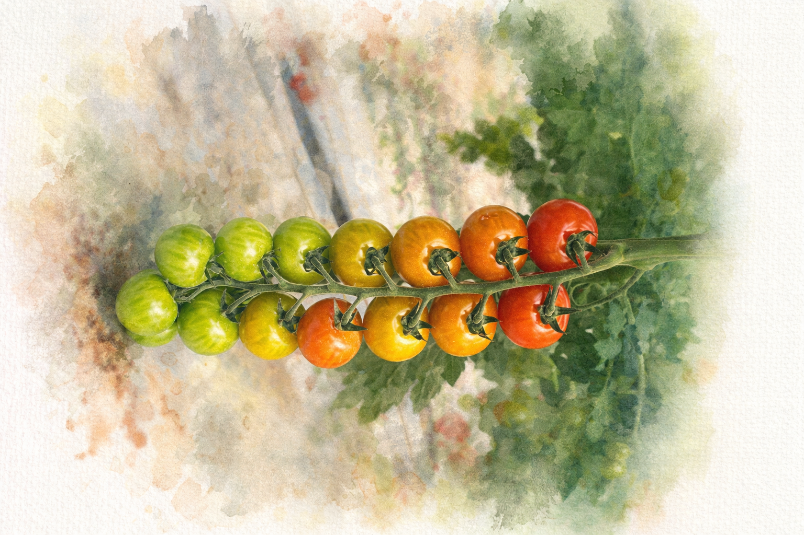
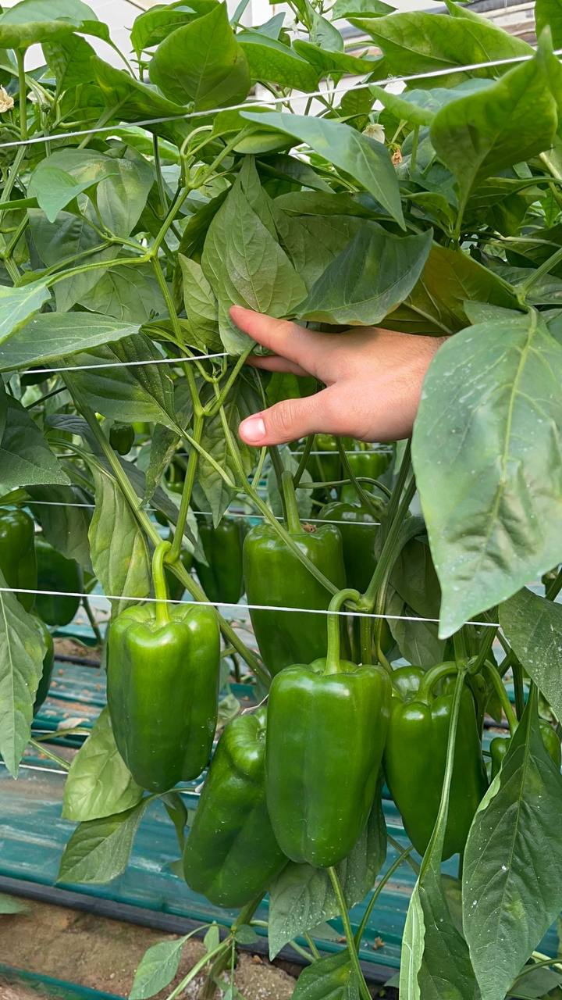
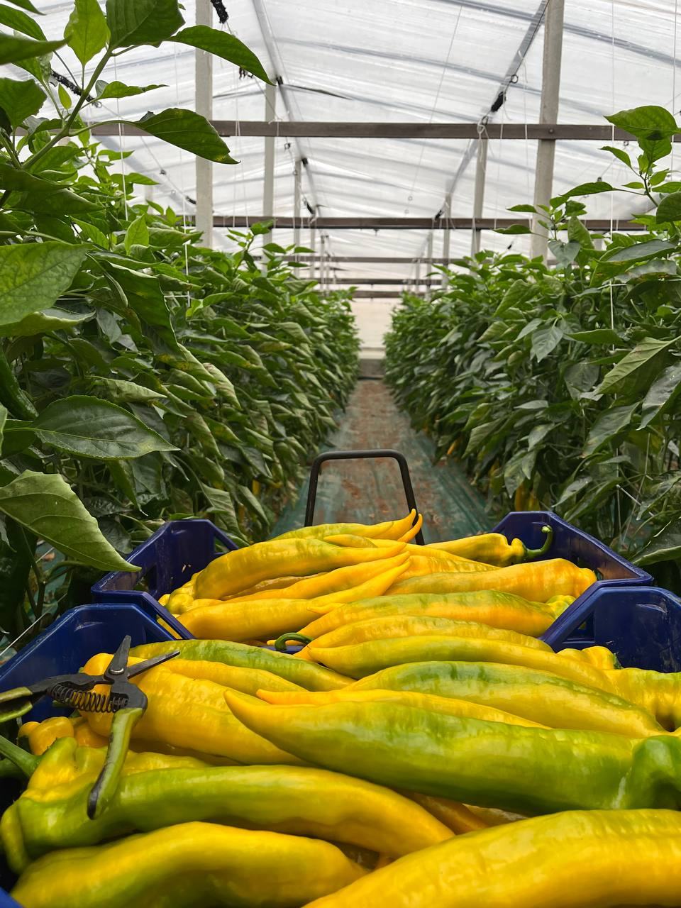

Coltivati con cura sotto il sole della Sicilia, i nostri peperoni sono croccanti e ricchi di sapore. Seguiamo ogni fase, dalla semina alla raccolta manuale.

Il vero gusto del pomodoro siciliano. Perfetto per sughi freschi o insalate, raccolto al punto giusto di maturazione per garantire il massimo dei nutrienti.

Il vero gusto del pomodoro siciliano. Perfetto per sughi freschi o insalate, raccolto al punto giusto di maturazione per garantire il massimo dei nutrienti.

Il vero gusto del pomodoro siciliano. Perfetto per sughi freschi o insalate, raccolto al punto giusto di maturazione per garantire il massimo dei nutrienti.

Il vero gusto del pomodoro siciliano. Perfetto per sughi freschi o insalate, raccolto al punto giusto di maturazione per garantire il massimo dei nutrienti.

Il vero gusto del pomodoro siciliano. Perfetto per sughi freschi o insalate, raccolto al punto giusto di maturazione per garantire il massimo dei nutrienti.
Ci impegniamo a preservare la genuinità dei nostri prodotti per i nostri clienti, prestiamo molta attenzione alla struttura e alle innovazioni, utilizzando l'avanzamento scientifico per migliorare sempre più i nostri processi.


Le nostre terre sono coltivate da noi da ben 3 generazioni
Titolare Cannata Gaetano
+39 360 9446899
Responsabile commerciale: Cannata Rosario
+39 331 2167179
info@cannataagricola.it
gaetanocannata@pec.it
gaetanocannata@pec.it
aziendaagricolacannata